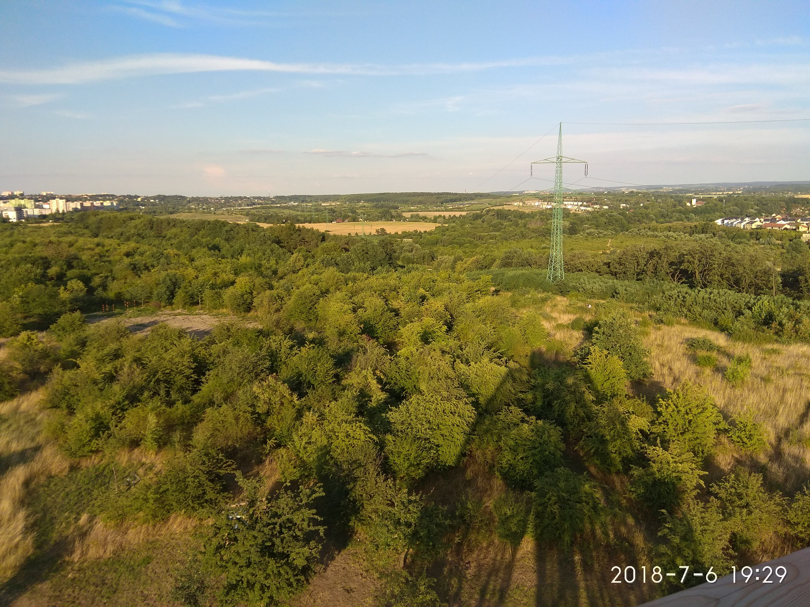

Povídaní o výletech
Pražský Hloubětín
hluboky prazsky Hloubetin, kde jste v Praze ale nejste v Praze. Panelaky, cinzaky, vily a domky se tady misi s psenicnymi lany a rybniky. Jdete, jdete jakoby vesnici a z niceho nic stojite u vchodu do metra anebo do povestneho "Icelandu". Tato mestska cast ale ma co nabidnout, co se "divociny" tyce. Je ni zcela nova vyhlidka Doubravka otevrena letos. Tato proutena konstrukce nabizi skvostny vyhled nahoru, dolu i do dalky.Galerie Obrazku
Klikne pro rozbaleni:



×